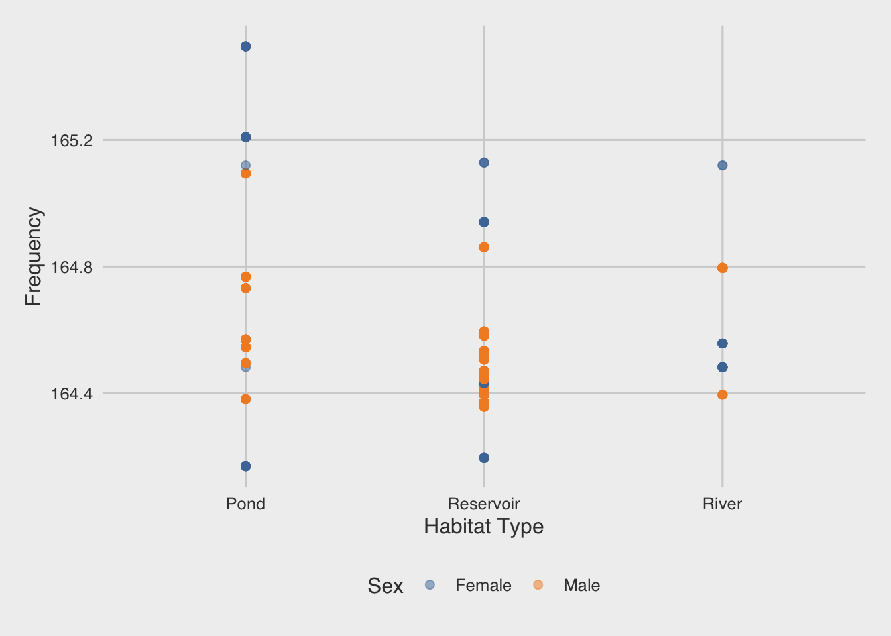

The goal of oregonfrogs is to provide a great dataset for data exploration & visualization.
Original source of data is a @USGS study from Pearl, C.A., Rowe, J.C., McCreary, B., and Adams, M.J., 2022. Geological Survey data release: https://doi.org/10.5066/P9DACPCV.
Installation
You can install the development version of oregonfrogs like so:
To install the development version from GitHub use:
# install.packages("remotes")
remotes::install_github("fgazzelloni/oregonfrogs")Example
This is a basic example which shows you how to load the package and available data:
library(oregonfrogs)
data(package = 'oregonfrogs')Let’s have a look at the dataset provided oregonfrogs.
head(oregonfrogs)
detection survey_date doy long lat sex frequency interval subsite
1 Captured 2018-09-25 268 -121.7903 43.76502 0 164.169 0 SE Pond
2 No visual 2018-10-02 275 -121.7905 43.76503 0 164.169 1 SE Pond
3 No visual 2018-10-09 282 -121.7906 43.76477 0 164.169 2 SE Pond
4 No visual 2018-10-15 288 -121.7907 43.76483 0 164.169 3 SE Pond
5 No visual 2018-10-22 295 -121.7906 43.76479 0 164.169 4 SE Pond
6 No visual 2018-11-01 305 -121.7898 43.76470 0 164.169 5 SE Pond
hab_type water type structure substrate beaver
1 Pond Deep water Marsh/Pond Herbaceous veg Unknown substrate No beaver
2 Pond Deep water Marsh/Pond Open Unknown substrate No beaver
3 Pond Shallow water Marsh/Pond Herbaceous veg Unknown substrate No beaver
4 Pond Deep water Marsh/Pond Woody debris Unknown substrate No beaver
5 Pond Deep water Marsh/Pond Woody veg Unknown substrate No beaver
6 Pond Deep water Marsh/Pond Herbaceous veg Unknown substrate No beaverFor example we can use the package for making data visualization:

Please note that the oregonfrogs project is released with a Contributor Code of Conduct. By contributing to this project, you agree to abide by its terms.